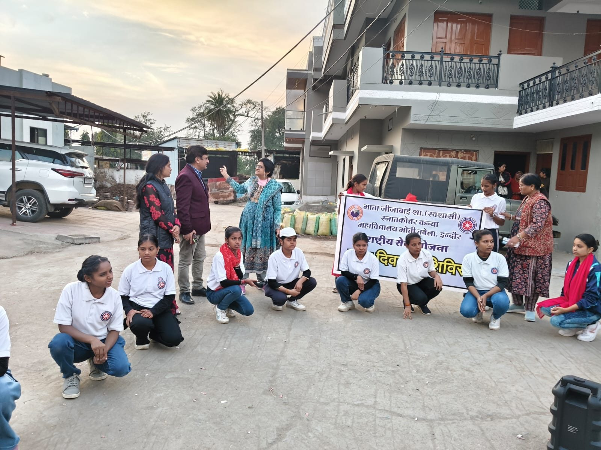
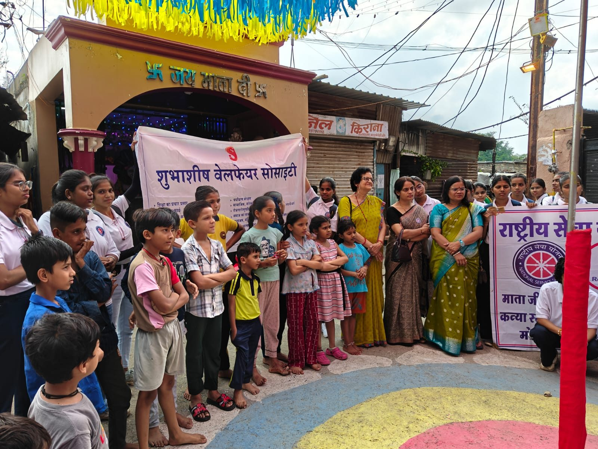
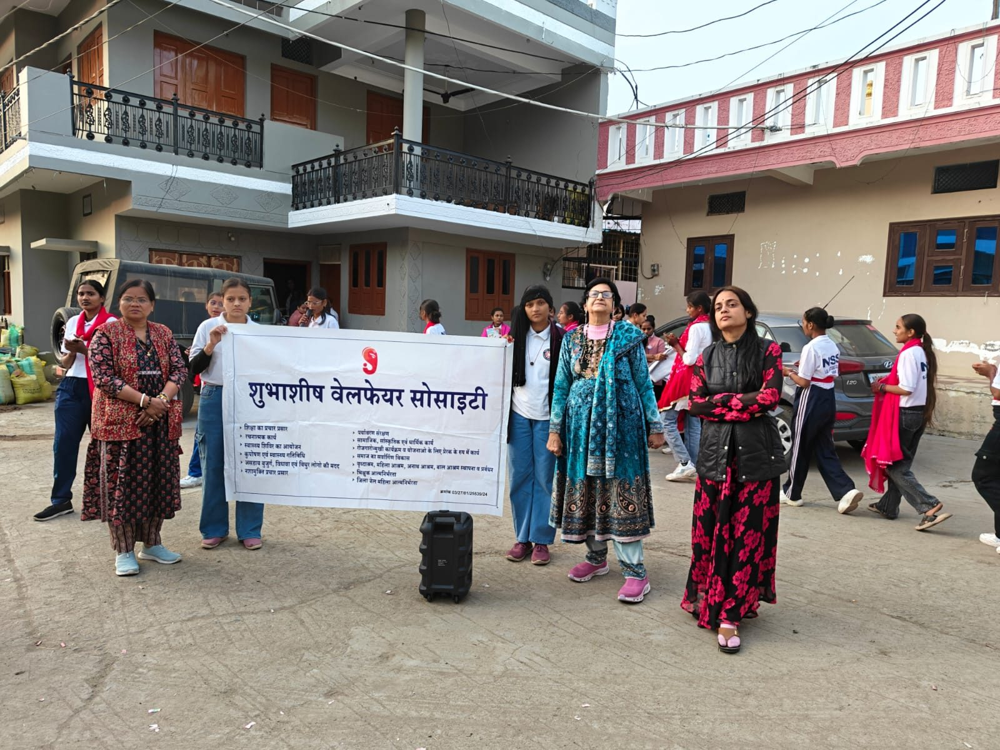
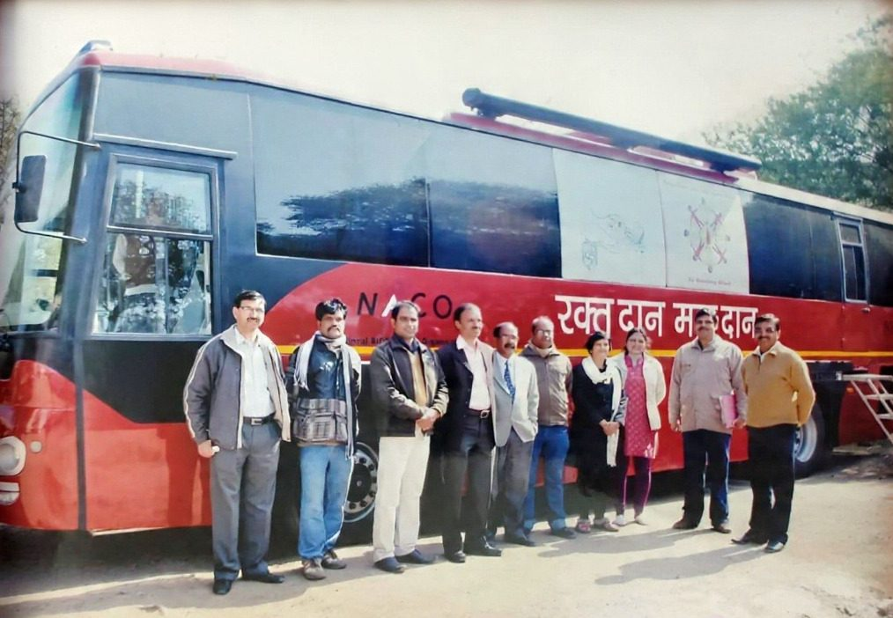

Nukkad natak on child marriage
Street plays in slums and villages that show the harm child marriage does to girls, and encourage families to let their daughters study and grow.
From street plays in Indore's bastis to sessions in nearby villages, this is the work we do on the ground.


Our volunteers, with NSS student volunteers, perform nukkad natak in bastis around Indore. The plays take on child marriage, addiction and other social issues, and draw children, mothers and neighbours into the conversation.

Student volunteers go house to house with the society's banner. They talk with women and families about health, nutrition and education, and note down what each household needs.

HIV/AIDS awareness sessions at the gram panchayat and community centres in nearby villages, held together with student volunteers and health workers.

Blood donation camps, held with a blood collection van, where members and supporters gave blood for people in need.
We run these programmes in slum communities of Indore, in surrounding villages, and at old age homes and special schools.
Street plays in slums and villages that show the harm child marriage does to girls, and encourage families to let their daughters study and grow.
Awareness sessions and plays on the harm of alcohol, tobacco and drugs, to help families and young people live free of addiction.
Sessions for adolescent girls and boys on health, hygiene, nutrition and the changes of growing up, in a space where they can ask questions freely.
Educational programmes for children in the slums of Indore and in surrounding villages, to support their learning and keep them in school.
Awareness drives in slum communities on healthy, affordable food and balanced meals for children and mothers, to fight malnutrition.
Visits and programmes at old age homes, where we share time, care and celebrations with elderly residents.
Activities with children with special needs that build on their abilities and confidence, and help them feel included.
Call, WhatsApp or write to us. We would be glad to hear from you.